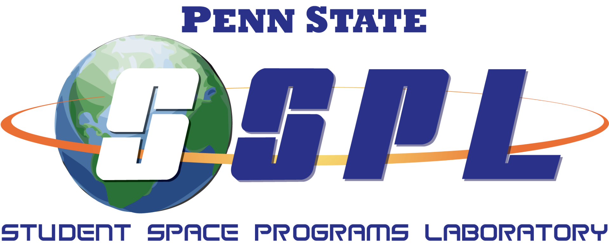

Oasis 
Components and Requirements:
Components
Requirements
Table of Contents:
1.
Flight Computer Modules
2.
Rover Modules
3.
Thermal Logic Controller (TLC) Modules
4.
Spectrometer Modules
5.
Laser Modules
6.
Oasis Science Package
Oasis
Docs
»
Oasis
View page source
Oasis
¶